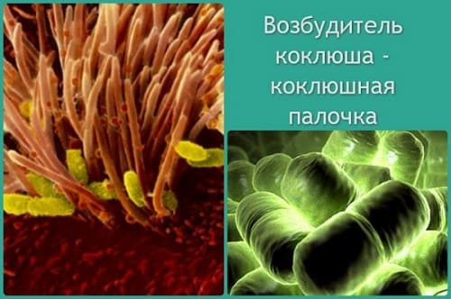
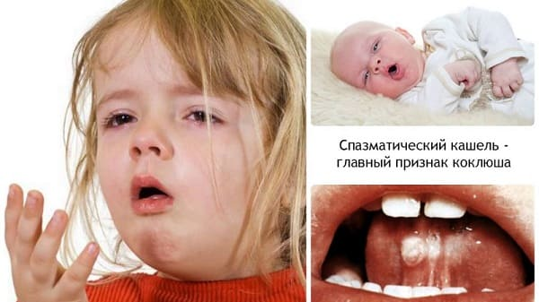
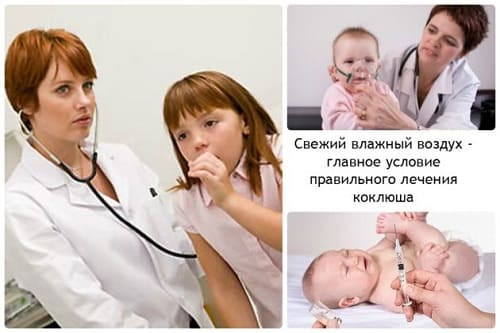
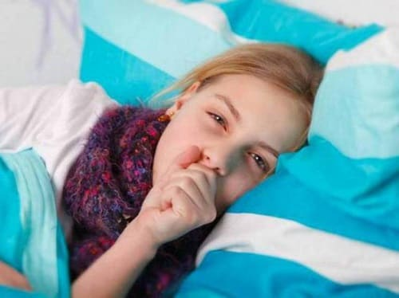
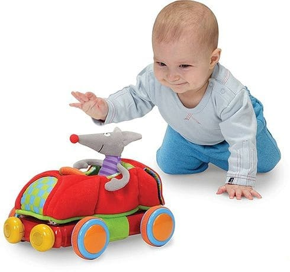

Коклюш, по большому счету, – одна из самых распространенных детских инфекций. Болезнь передается воздушно-капельным путем, а ее главным проявлением является приступообразный кашель, который почти не поддается лечению.
Коклюш относят к управляемым инфекциям, поскольку частота возникновения этой болезни во многом зависит от того, как организовано проведение профилактических прививок. Прививки от коклюша начинают делать с трехмесячного возраста вместе с дифтерией и столбняком – используется, как правило, вакцина АКДС.Правды ради следует отметить, что из трех компонентов этой вакцины коклюшный переносится наиболее тяжело – т. е. именно с ним чаще всего бывают связаны все те неприятные ощущения, которые испытывает ребенок после вакцинации (недомогание, повышение температуры, снижение аппетита). И нередко бывает так, что ослабленным детям или детям, у которых ранее отмечались выраженные реакции на прививку, вакцинацию делают препаратом АДС – не содержащим коклюшного компонента. Вот такие дети – толком не привитые – и болеют чаще всего тяжелыми формами коклюша. Хотя привитые тоже болеют, но несравнимо легче. Легче настолько, что диагноз «коклюш» устанавливается в десятки раз реже, чем это заболевание встречается на самом деле.
Удивительной особенностью коклюша является полное отсутствие к нему врожденного иммунитета: заболеть этой болезнью может даже новорожденный. Зато после перенесенного заболевания иммунитет вырабатывается стойкий и сохраняется в течение всей жизни.
Микроб, вызывающий коклюш, называется коклюшной палочкой. Она быстро (очень быстро) погибает во внешней среде, поэтому единственным источником инфекции является больной человек и только больной человек. Люди – и дети, и взрослые – очень восприимчивы к коклюшу и, при отсутствии иммунитета, вероятность заболеть после контакта с больным достигает 100 %. Палочка распространяется и, соответственно, может вызвать заражение здорового, главным образом, при кашле больного. Следует в то же время отметить, что «подцепить» коклюш можно лишь при весьма тесном общении с больным – даже при кашле более чем на два, максимум на три метра палочка не рассеивается. Инкубационный период в среднем составляет 5–9 дней, но может колебаться от 3-х до 20-ти.

Как мы уже заметили, главным проявлением болезни является своеобразный, ни с чем не сравнимый кашель. Причина его возникновения в очень и очень упрощенном виде выглядит следующим образом.
Итак, для начала заметим, что все функции человеческого организма управляются определенными клетками головного мозга. Т. е. имеется ряд клеток, выполняющих общую функцию, которые образуют так называемый управляющий центр – центр дыхания, центр кровообращения, центр терморегуляции и т. д. Не обойден вниманием и кашель – имеется кашлевой центр, который активно функционирует в течение всей жизни, поскольку кашель, и довольно часто, жизненно необходим вполне здоровому человеку.
Следует также знать, что дыхательные пути – трахея, бронхи – покрыты изнутри так называемыми эпителиальными клетками, которые, в свою очередь, имеют ворсинки – эдакие выросты, похожие на реснички, – недаром внутреннюю поверхность трахеи и бронхов называют реснитчатым эпителием. Назначение ворсинок – обеспечить движение слизи (мокроты), а любое их раздражение вызывает появление кашля.
Оболочка коклюшной палочки тоже имеет ворсинки, с помощью которых бактерии плотно прикрепляются к ресничкам эпителия – это раз. А два состоит в том, что размножаться возбудитель коклюша может только в реснитчатом эпителии и больше нигде! Вот и происходит постоянное раздражение эпителия, что, в свою очередь приводит, с одной стороны, к постоянному раздражению кашлевого центра и с другой – к не менее постоянному выделению клетками дыхательных путей большого количества густой и вязкой слизи. При этом возбуждение клеток кашлевого центра оказывается настолько сильным, что даже после того, как в организме не остается ни одной коклюшной палочки, кашель все равно продолжается. А кроме того, предполагают, что коклюшная палочка выделяет токсин, к которому особенно чувствительны именно клетки кашлевого центра. Таким образом, главная причина кашля при коклюше, по крайней мере, после двух-трех недель болезни, находится уже не в бронхах и легких, а, как это ни парадоксально, в голове.
Начинается коклюш постепенно – появляется сухой частый кашель, иногда – небольшой насморк, температура тела повышается незначительно – максимум 37,5–37,7 ºС, но гораздо чаще она вообще остается нормальной. Заподозрить коклюш на этом этапе болезни (он называется катаральным периодом и длится от трех дней до двух недель) практически невозможно – ну разве что заведомо известно о контакте с больным. Описанные симптомы служат поводом для диагностики всяких-разных ОРЗ и бронхитов, а поскольку температуры особой нет, то, разумеется, предполагаются ОРЗ и легкие бронхиты. В подобной ситуации ребенок нередко продолжает ходить в школу или в детский сад, что весьма печально, ибо коклюш максимально заразен именно в катаральном периоде. Кстати, раз уж речь зашла о заразности, отметим, что больной человек выделяет микробы во внешнюю среду около месяца, но количество коклюшных палочек существенно уменьшается с каждым днем начиная со второй недели болезни и становится очень незначительным дней эдак через 20.
К сожалению, катаральным периодом болезнь не ограничивается: кашель становится приступообразным – вот на этом этапе (период спазматического кашля), как правило, и ставится диагноз «коклюш». Коклюшный кашель настолько специфичен, что врачу необходимо лишь услышать его – после этого уже не требуется никаких дополнительных анализов, все и так ясно.
Так что же представляет собой коклюшный кашель? Если честно, то описывать его – занятие безнадежное: легче было бы самому покашлять. Но попробуем. Типичный коклюшный кашель – это приступ, состоящий из нескольких кашлевых толчков, которые без остановки следуют друг за другом, не давая больному возможности передохнуть. Если вы попробуете сейчас покашлять, то поймете, что каждый кашлевой толчок – это выдох. А если таких толчков множество, то ведь надо же когда-нибудь совершить вдох. И действительно, после окончания приступа кашля больной делает глубокий вдох, который очень часто сопровождается специфическим свистящим звуком. Причина возникновения этого звука, а он называется репризом, состоит в том, что непосредственно во время кашля происходит спазм голосовой щели (того места в гортани, где находятся голосовые связки).
Во время приступа очень часто отмечается покраснение или даже посинение лица, а после его (приступа) окончания – рвота или просто выделение слизи, которую ребенок выплевывает или глотает.
Подводим итоги. Для коклюшного кашля типичны: приступ + реприз + последующее отхождение слизи или рвота.
С учетом описанного нами кашля становится понятным, что тяжесть болезни определяется, прежде всего, частотой и длительностью приступов. Весьма характерно, что вне приступа кашля состояние ребенка почти не нарушено.
Продолжительность периода спазматического кашля весьма вариабельна и может достигать двух-трех месяцев даже несмотря на лечение! Тем не менее частота приступов нарастает дней десять, после чего положение недели на две стабилизируется и только потом количество и продолжительность приступов медленно (к сожалению, очень медленно) начинает уменьшаться.
Очень тяжело протекает коклюш у детей первого года, особенно первых шести месяцев жизни. В этом возрасте после кашля часто бывают остановки дыхания, которые длятся от нескольких секунд до минуты и даже дольше! Неудивительно, что в связи с нехваткой кислорода у младенцев появляются нарушения со стороны нервной системы и другие осложнения.
В целом – и это особенность коклюша – проявления болезни хоть и очень неприятны, но не особенно страшные. А чего действительно приходится опасаться – так это осложнений, наиболее частым из которых является воспаление легких (пневмония). Кстати, вызывают его вовсе не коклюшные палочки, а другие микробы – стафилококки, стрептококки и т. п.
Убить коклюшную палочку несложно, хотя и не все антибиотики на нее действуют. Так, например, пенициллин не действует вообще. Но, к счастью, бактерия практически не способна вырабатывать устойчивость к антибиотикам. Т. е. если уж какой-либо препарат против микроба эффективен, то он и будет эффективен. Наиболее часто врачи используют эритромицин – после трех-четырех дней его употребления от коклюшной палочки, в подавляющем большинстве случаев, не остается и следа. Но в периоде спазматического кашля никакого эффекта – в виде уменьшения частоты и длительности приступов – заметить не удается. И мы уже понимаем почему – ведь кашель не из-за микроба, а из-за поражения клеток кашлевого центра. Главная цель приема антибиотиков в этом периоде – сделать больного не заразным. А вот если тот же эритромицин назначается в катаральном периоде – в первые дни болезни, когда еще нет перевозбуждения кашлевого центра, – так вот, в этом периоде лекарство вполне может прервать болезнь и не довести человека до приступов.

Но угадать не всегда получается – не пичкать же детей антибиотиками при любом покашливании. А ведь все вышеописанное – это типичный коклюш. Который бывает совсем не часто – спасибо прививкам. Сплошь и рядом встречаются абсолютно нетипичные формы болезни – редкий кашель, без всяких температур, с прекрасным самочувствием. И очень часто болеют папы и мамы, которые, в свою очередь, заражают детей (при опросе регулярно выясняется, что в семье заболевшего ребенка длительно кашлял кто-то из взрослых).
Додуматься до нетипичного коклюша бывает очень и очень трудно, но, в конце концов, нетипичный коклюш – легкий коклюш. Поэтому давайте поговорим о том, как помочь ребенку при настоящем коклюше: если будем об этом знать – с легкими формами справимся и подавно.
Итак, что же надо делать и что необходимо знать?
• Помнить о других людях – о тех, кто был в контакте с вашим ребенком, и о тех, кто в этом контакте может оказаться: дитя изолировать, сообщить друзьям, что визиты нежелательны.
• Убить микроб: выбор антибиотика (возможных вариантов десятки), а также доза лекарства – это дело врача. Задача родителей – добиться попадания препарата внутрь больного, соблюдать назначенные дозы, кратность и сроки приема.
• Относиться к болезни философски и отдавать себе отчет в том, что коклюш управляем лишь на этапе профилактики. Но ежели заболели – время оказывается одним из главных факторов на пути к выздоровлению. Короче говоря, пока свое не откашляет – ни на какие таблетки и ни на каких чудо-докторов особо надеяться не стоит.
• Следует знать, что приступы кашля могут провоцировать физическая нагрузка, чихание, жевание, глотание, отрицательные эмоции. Выводы из этих знаний вполне логичны:
1 не устраивать активных игр с беганьем, прыганьем и скаканием;
2 всячески избегать пыли, удалять ребенка из комнаты на время уборки;
3 стараться, чтобы предлагаемая ребенку пища не требовала особого жевания и, уж по крайней мере, на время болезни, забыть о жевательных резинках.
• С учетом предыдущего пункта, следует осознать, что кормление ребенка с коклюшем составляет особую проблему. Для некоторых детей сам процесс поглощения пищи становится настолько страшным, что даже упоминание о еде (например произнесенная мамой фраза: «Пойдем кушать») вызывает приступ кашля. К счастью, это бывает редко, но вот кашель после еды и рвота всем, что съел, – явление довольно распространенное. Не следует давать сразу много еды – даже если хочет есть много. Чем дольше будет жевать и чем больше съест – тем больше вероятность и приступа кашля, и рвоты. Поэтому лучше кормить чаще, но понемногу. В принципе, кашель с рвотой после него редко бывает дважды подряд – т. е. если после приступа рвота была, то следующие 2–3 приступа будут легче.
Одно из наиглавнейших условий, обеспечивающих адекватную помощь ребенку с коклюшем, – правильный ответ на вопрос «чем дышать?»
Чем суше воздух и чем теплее в комнате, где находится ребенок, тем гуще мокрота, тем больше вероятность и увеличения частоты приступов, и развития осложнений. Но ведь традиционные действия при появлении кашля у ребенка заключаются в том, чтобы подержать его, родимого, дома. И неудивительно, что после месяца кашлянья взаперти, без прогулок и свежего воздуха, якобы «бронхит», который на самом деле был легким коклюшем, заканчивается воспалением легких.
Поэтому необходимо помнить и понимать, что свежий воздух является обязательным условием правильной помощи ребенку не только при коклюше, но и при других болезнях, сопровождающихся кашлем и при бронхите, и при трахеите, и при аллергических поражениях дыхательных путей, и при воспалении легких. Но поскольку упомянутые нами «другие болезни» проходят несравнимо быстрее, чем коклюш, то и отрицательные последствия домашнего режима проявляются не так часто.
Таким образом, если уж диагностирован коклюш, то все родственники больного должны быть мобилизованы для того, чтобы по очереди с ребенком гулять. В летнее время, конечно же, нецелесообразно быть там, где сухо и тепло, – необходимо вставать пораньше, пока влажно и прохладно, и в обязательном порядке подольше гулять перед сном. Важно только не забывать о том, что во время гуляний следует избегать общения с другими детьми.
Очень хорошо прогуливаться возле водоемов, ежели таковые имеются поблизости. А если не имеются, то вообще неплохо было бы уехать туда, где они есть, – в деревню к бабушке, на дачу и т. п.

Еще раз обращаю внимание на тот факт, что в современных условиях, когда большинство детей привиты, типичный и тяжелый коклюш встречается не так уж и часто. При длительном, но нетипичном кашле могут помочь дополнительные (лабораторные) методы исследования. В некоторых случаях в обычном клиническом анализе крови выявляют изменения, вполне закономерные для коклюша. Но единственным, стопроцентным доказательством болезни является выделение коклюшной палочки – у ребенка берут из горла мазок или предлагают ему покашлять на специальную чашку с питательной средой, ну а потом, в бактериологической лаборатории, смотрят, что там вырастет. Хотя и здесь не все так гладко, как хотелось бы: уж очень привередливый микроб, эта самая коклюшная палочка. Сплошь и рядом бывают ситуации, когда, судя по кашлю, у ребенка – типичнейший коклюш, а микроб вырастить не удается – никакая самая наилучшая питательная среда не может сравниться с реснитчатым эпителием дыхательных путей. Достаточно пару раз принять антибиотик, достаточно поесть или почистить зубы перед сдачей анализа – и шансов выделить коклюшную палочку практически нет. Я уже не говорю о том, что после третьей недели болезни микроб в принципе практически не выделяется.
Столь подробный рассказ о трудностях, которые сопровождают врачей-лаборантов при попытке обнаружения коклюшной палочки, автор предпринял с одной-единственной целью: убедить читателей в том, что если лаборатория дала заключение про отсутствие возбудителя коклюша, то это вовсе не говорит о том, что коклюша у ребенка нет.
Диагностика легких и нетипичных случаев коклюша даже для врача очень высокой квалификации всегда затруднительна. Наблюдательность родителей может очень и очень помочь, а принципиально важные моменты, позволяющие заподозрить коклюш, состоят в следующем:
• Длительный кашель при отсутствии катаральных явлений (насморка, повышения температуры) или катаральные явления за 2–3 дня прошли, а кашель остался.
• Хорошее общее самочувствие – приличный аппетит, ребенок активен; когда не кашляет – так и вовсе кажется вполне здоровым.
• Полное отсутствие какого-либо облегчения, а иногда даже ухудшение от лечения отхаркивающими средствами.
Любая простуда, любое ОРЗ у ребенка с коклюшем многократно усиливает проявления самого коклюша и многократно увеличивает риск осложнений – все той же пневмонии. Меры профилактики достаточно стандартны – максимально сократить общение с другими людьми, даже если ребенок уже не заразен, не допускать переохлаждений, простудившихся взрослых изолировать.
В принципе, никогда нельзя забывать о возможности развития воспаления легких, а мысль о том, что таки началось, должна появиться при:
а повышении температуры тела на второй-третьей неделе болезни, особенно когда температура повысилась, а насморк при этом не появился;
б внезапном учащении кашля и увеличении длительности приступов после того, как в течение нескольких дней становилось лучше или, по крайней мере, не становилось хуже;
в изменении общего самочувствия – слабость, учащенное дыхание – в промежутках между приступами.

Само собой разумеется, что диагноз воспаления легких поставит врач, если его вызвать, но коклюш ведь длится несколько месяцев, и лечится, чаще всего, в домашних условиях. Нередко бывает так, что родителям не очень-то и удобно часто беспокоить врача, особенно когда диагноз вполне ясен, и не менее ясно, что для выздоровления нужно время и немалое. Перечисленные выше признаки (а, б, в) помогут родителям преодолеть стеснительность и своевременно обратиться за помощью.
Мы же отметили тот факт, что в подавляющем большинстве случаев коклюш вполне благополучно лечится (или проходит сам по себе) в домашних условиях. Но иногда без больницы все же не обойтись.
Так когда же?
а коклюш у детей первого года жизни и особенно (!) первого полугодия: очень высок риск осложнений, да и заболевание в этом возрасте почти всегда протекает весьма тяжело;
б вне зависимости от возраста, когда имеет место развитие осложнений или когда на фоне кашля появляются остановки дыхания.
Вполне логично заметить следующее: никто и никогда не будет держать малыша в больнице до полного выздоровления. Но и врач больницы, и родители ребенка, прежде чем попрощаться друг с другом должны быть уверены, что болезнь свой пик миновала (нет остановок дыхания, прошли осложнения, в течение нескольких дней количество приступов кашля стало уменьшаться).
Антибиотиками и свежим воздухом лечение коклюша, разумеется, не ограничивается. Хотя из огромного арсенала лекарственных препаратов, помогающих при кашле, нет ни одного, способного существенно облегчить течение болезни. Выбор конкретного лекарства – дело врача, но родители должны знать следующее: даже если, с вашей точки зрения, назначенное лекарство, например, амброксол, не помогает вообще, это вовсе не говорит о нецелесообразности его приема. Дело в том, что механизм действия большинства отхаркивающих средств (и упомянутого нами амброксола в том числе) основан на разжижении мокроты. Кашлять ребенок реже не станет, но вероятность осложнений уменьшится в несколько раз, поскольку именно густая слизь, нарушая проходимость бронхов, и является главной причиной развития воспаления легких.
И последнее, о чем хотелось бы рассказать в этой главе.
Впервые столкнувшись с коклюшем в больнице, автор испытал потрясение в связи с тем, как достижения цивилизации способны влиять на «народные» способы лечения. Сейчас объясню.
Представьте себе такую ситуацию. Сережке 8 лет. У него тяжелый коклюш, было приличное воспаление легких, в последнее время стало чуть полегче, хотя кашляет по-прежнему часто и долго – по 15–20 приступов в сутки. И вот появляется его прабабушка (заметьте, не бабушка, а именно прабабушка) – эдакая древняя беззубая старушка с палочкой – и говорит, что, мол, хватит вам тут в больнице глупостями заниматься, а надо срочно покатать ребенка на самолете. В дальнейшем мне неоднократно приходилось слышать от пожилых (именно от пожилых) людей, что нет лучшего способа быстро вылечить коклюш, чем воздушные путешествия. И самое удивительное: действительно многим помогает! Но не всем и не всегда.
Объяснение же состоит в следующем. Как мы уже отметили, главная причина кашля в поздние сроки болезни – очаг возбуждения кашлевого центра в голове. И если нам удается создать другой очаг, более активный, то возбудимость кашлевого центра снижается. И чем активнее, чем длительнее это новое возбуждение, тем более выражен лечебный эффект.
Поэтому любые сильные и положительные эмоциональные нагрузки могут способствовать быстрому выздоровлению.

Неудивительно, что самолет помогает! Как помогает и новая кукла, и поездка с папой на рыбалку, и поход всей семьей в зоопарк, и покупка щенка или котенка… И вполне понятно, что чем эмоциональней ребенок, тем эффективнее такое лечение. Как, впрочем, понятно и полное отсутствие эффекта от воздушных путешествий у детей первого года жизни. Кстати, Сережке очень даже помогло: папа забрал его на один день из больницы, и они полетели на самолете (местная авиалиния – до какого-то там райцентра и обратно). Через три дня после этого выписали домой. Вот вам и народная медицина!
Е.О.Комаровский. "Здоровье ребенка"